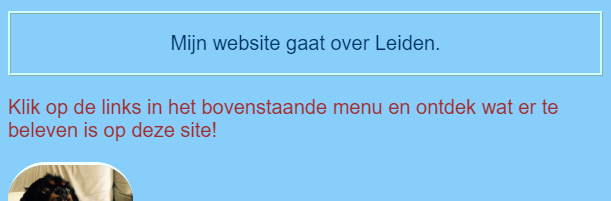
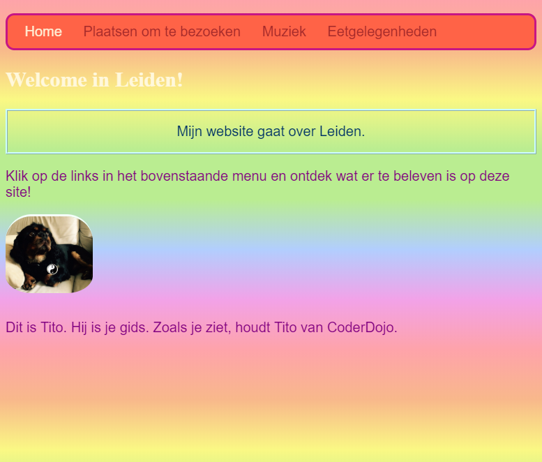

Laten we de Home pagina een beetje opleuken! Met een andere soort CSS selector kan je een unieke set CSS regels toepassen op slechts één specifiek element.
index.html en zoek een alinea (p) element, of voeg er een toe als je er geen hebt. Voeg het volgende attribuut toe aan de
tag:
<p id="mijnCooleTekst">
Mijn website gaat over Leiden.
</p>
Het id is een naam die je een bepaald element geeft om het te identificeren (herkennen). Er mogen nooit twee of meer elementen op een pagina zijn met hetzelfde id!
styles.cssen voeg de volgende code toe:
#mijnCooleTekst {
color: #003366;
border: 2px ridge #ccffff;
padding: 15px;
text-align: center;
}
Je tekst zou er nu zo uit moeten zien:

Een selector met een # ervoor wordt gebruikt om CSS-regels toe te passen op een specifiek element op je website. Je geeft de naam op van het id van het
element.
body van de Home pagina. Ga naar index.html en voeg een id toe aan de
body tag.
<body id="voorpagina">
styles.css de volgense CSS regel toe:
#voorpagina {
background: #48D1CC;
background: linear-gradient(#fea3aa, #f8b88b, #faf884, #baed91, #baed91, #b2cefe, #f2a2e8, #fea3aa);
}
Je zou iets moeten krijgen dat er zo uitziet:

Je hebt net een verloop gebruikt! Dat is de naam die wordt gegeven aan het effect waarbij de ene kleur vervaagt in de andere.
Opmerking: de eerste background (achtergrond) eigenschap
boven het verloop bepaalt een standaardkleur voor browsers die geen verloop ondersteunen.
Als je de code perfect hebt overgetypt en je hebt het mooie regenboogeffect hierboven niet gekregen, kan het zijn dat je browser geen verloop ondersteunt.
Je kunt veel verschillende effecten maken met verlopen. Ga hier naartoe als je meer wilt weten.
id te geven en maak dat element op met behulp van de ID selector met een # zoals hierboven. Wat dacht je ervan om een
afbeelding een border-radius van 100% te geven, zodat 'ie helemaal rond is? Alle andere afbeeldingen op de website blijven zoals ze zijn.